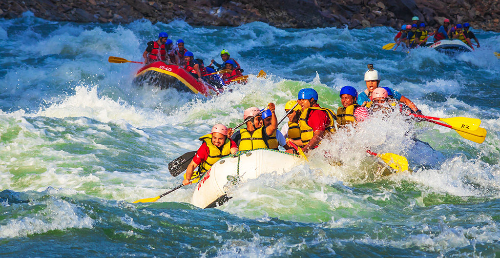
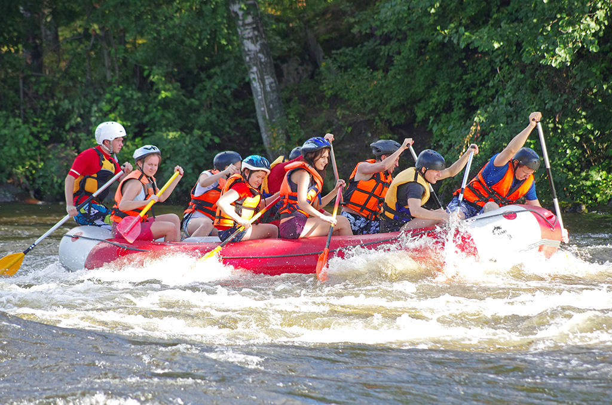
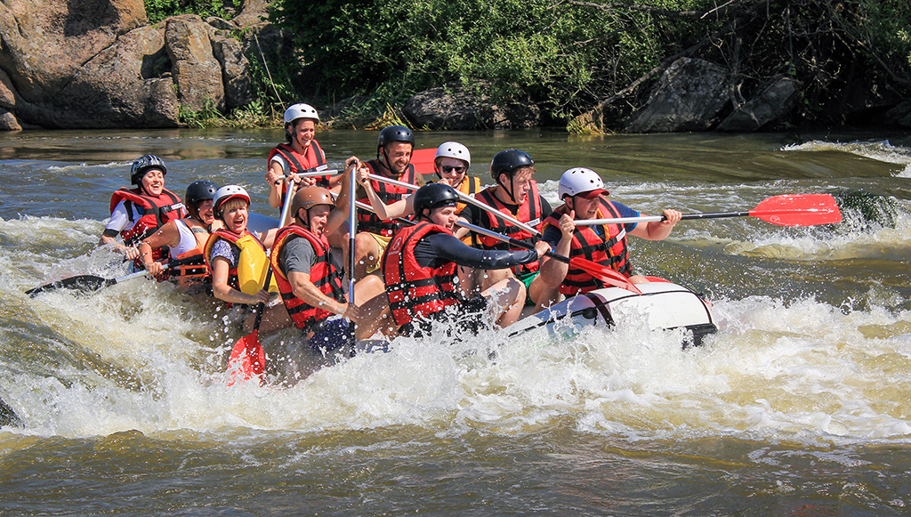

Family Float
Gentle currents, big views—perfect for first timers and families.
Since 1998, we’ve helped thousands discover the thrill of white water.
What started as a two-raft outfit on a quiet river bend has grown into a professional guide company known for safety, scenery, and smiles. Over the years, we’ve built a team of certified guides and a fleet designed for all skill levels—from first-timers to adrenaline pros.
Our commitment is simple: unmatched river experiences backed by training, top-tier equipment, and a love for the outdoors.


Gentle currents, big views—perfect for first timers and families.

A balanced run with playful Class II–III waves and plenty of splash.

Technical lines and fast water for seasoned paddlers. Guide approval required.
Check availability and plan your next river day.
Explore Trips